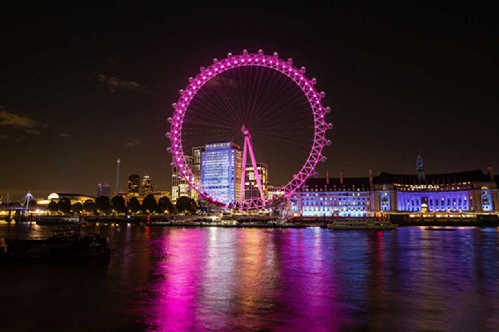
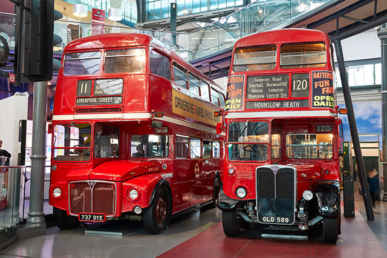
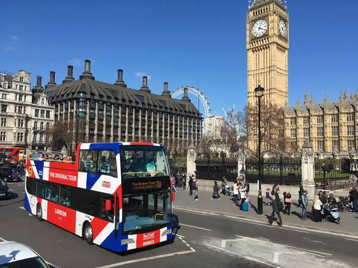
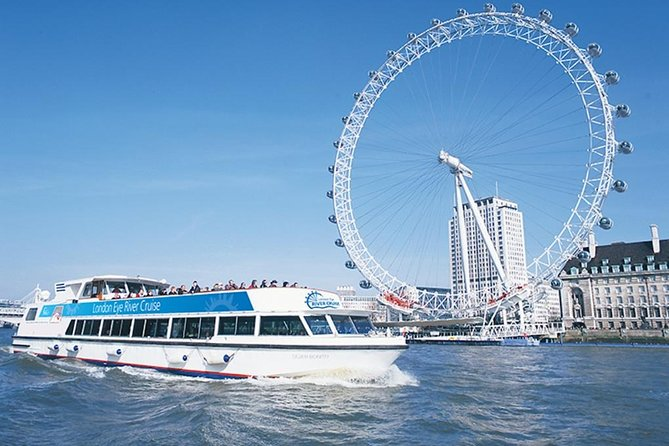

The London Eye is very fun and cool.
Very close to Waterloo Station
The Tower of London used to be a prison and you can see the crown jewels.
Near Tower Hill and Gateway, and near Tower Bridge

here you can see all kinds of old buses and trains.
Near Covent Garden
You can see the city from a tall bus.
Scattered around London
Going on a river boat tour is a great way to see the city.
Scattered around London
